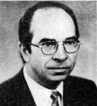

5 июля 2008 года, Разлив, на даче у М.В.Попова и в поезде Сестрорецк-Петербург. Записала Татьяна Косинова.
— Расскажите о том времени. В чем Вы принимали активное участие? Что вы сами инициировали, создали? Что возникло при Вашем непосредственном участии? Какие общественные движения, издания? Вот вся Ваша активность общественно-политическая в тот период особенно интересна.
— Тот период для меня был, по сути, завершением больших дебатов, связанных с защитой мною трёх докторских диссертаций. Первые две — по политической экономии — прошли с большим шумом и формально отрицательным результатом. Поскольку вопрос был о том, куда идти, и диссертации были посвящены тому, что движение на рынок приведет к негативным результатам, и что социализм рыночным хозяйством не является. Третья моя, философская диссертация, называлась «Планомерное разрешение противоречий движения коммунистического способа производства в его первой фазе» и была защищена быстро и успешно. И самое интересное — в ней было доказательство того, что наряду с прогрессивной тенденцией, которая толкает социализм вперед, есть другая — негативная, разрушительная тенденция, которая действует столь же объективно. И вопрос о том, какая из тенденций возьмет верх, — не такой простой.
Та концепция, которая к тому времени была руководящей идеологической концепцией для партии — концепция «развитого социализма» — была явно ненаучной. Это вредная и ошибочная концепция. Она определила дальнейшее разложение. Если вы считаете, что социализм «развитой», то больше ему развиваться некуда. А социализм — первая фаза коммунизма. Это незрелый, неполный коммунизм. И он не может быть зрелым, «развитым». И собственно, любить его особенно не за что. Вы любите незрелые яблоки? Поэтому от него либо вперед надо идти, к полному коммунизму, либо вернуться назад. Вполне возможно и то, и другое движение. Лет пять я пробивал статью о том, что есть у нас экономические причины для мелкобуржуазных действий, противоположных социализму, и что при социализме идет борьба рабочего класса с мелкобуржуазными попытками взять себе побольше и получше и дать обществу похуже и поменьше, — наконец напечатал. Вот это тогда наблюдалось, это чувствовалось. И так парадоксально получилось, что когда было доказано, в том числе в диссертации, что у социализма есть негативные тенденции, и он может рухнуть, — он рухнул.
В своих докторских диссертациях по политэкономии я отнюдь не поддерживал концепцию «развитого социализма». И в итоге получал прибытие на свою защиту команды противников и в том числе господина Ракитского, доктора экономических наук, который выступал моим неофициальным оппонентом и заявлял: «В работе Попова нет таких выдающихся теоретических достижений нашей партии, как «общенародное государство» и «развитой социализм». Это был для меня вопрос теоретический и принципиальный, а не вопрос зарплаты или карьеры. Вот почему мне пришлось защищать докторскую трижды. Два раза я защищался на ученую степень доктора экономических наук по политэкономии. И третий раз — в тот период, который захватывает ваши интересы, и мои, конечно, поскольку это бурный период, — в 1987 году. Мои защиты проходили очень бурно и носили общественный характер. Первая защита была с трех часов дня до часу ночи в 1978 году. Вторая была в 1982 году и продолжалась два дня. У меня было 100 отзывов на автореферат, из них больше половины положительных, в том числе отзывы положительные прислали все заместители директора Института экономики АН СССР. И как сказал мой старший коллега Василий Яковлевич Ельмеев, доктор экономических и доктор философских наук: «Мы сейчас эти вопросы обсуждаем в зале, а в Польше они уже обсуждаются на улице». Поэтому вопрос был у нас, с одной стороны, научный, потому что наука — это руководящая нить для действий. С другой стороны, он и политический. Оба раза я получал большинство, при том, что 2/3, необходимых для защиты докторской, не получал. Или другими словами, нужно всего 1/3 против, чтобы человек докторскую не защитил. И после моих двух незащит ВАК закрыла наш докторский совет по политэкономии, что чрезвычайно обострило борьбу.
У нас на экономическом факультете очень много вываривалось из того, что выплеснулось потом, чуть попозже. Например, декан нашего факультета О.И.Ожерельев потом стал помощником Горбачева. Я позднее тоже был на достаточно серьезных политических постах, но прежде я довел до конца дело своей докторской. То есть я сделал очень крутой поворот, не в смысле идей, а в смысле методологии, усилил свои позиции философские и защитил на доктора философских наук в 1987 году. Там все прошло очень быстро. Философы, несмотря на то, что, как вы понимаете, философы не такие добрые люди, очень серьезные, они высоко оценили диссертацию, дружно проголосовали «за». Я прошел еще несколько ступеней (вызов в ВАК, перезащита в Институте философии) и в 1989 году, через два года после защиты докторской, меня, наконец, утвердили. После этого я, оставаясь в ЛГУ, стал заведовать на полставки кафедрой научного коммунизма Института марксизма-ленинизма Ленинградского горкома партии. Мы создали факультет рабочего актива. Там стали обучать и бывших воинов-афганцев. Много сделали интересного и полезного. Начали, развернули работу с рабочими. Достаточно широкую. И у меня были позиции для того, чтобы ее разворачивать.
В это же время я участвовал активно как публицист в общественной жизни (премия журнала «Молодая гвардия» за 1981 год за критические статьи и рецензии). В частности, мне пришлось принять участие в обсуждении нашумевших пьес Михаила Шатрова о Ленине. Я к тому времени для журнала «Молодая гвардия» рецензировал всякие публикации, содержащие ленинские мысли, статьи, заметки, а также большие сборники (»Ленин о коммунизме», «Ленин о диктатуре пролетариата», «Ленин о борьбе с контрреволюцией» и др.). И я обратил внимание на то, что у Шатрова идет сплошная подтасовка. Вроде бы Ленин, люди пришли, оделись красиво, но говорит персонаж что-то совсем не то. А дальше было дело техники. Я к тому времени закончил читать полное собрание сочинений Ленина, мне было легко: то, чего точно не помнил, было в конспектах, можно было просмотреть и найти соответствующие места. И я обнаружил у Шатрова колоссальнейшие извращения.
И вот мы выступили с критикой этих извращений по ленинградскому телевидению. Мы — это Смирнов Игорь Константинович, мой заведующий кафедрой, доктор экономических наук профессор, Муравьев, доцент, историк и кандидат философских наук Владимир Иванович Еременко, который сейчас советник председателя Законодательного собрания Санкт-Петербурга. Мы обнародовали то, что это никакие не ленинские пьесы, а антиленинские пьесы, там троцкизм под видом ленинизма. Шатров разъярился: я приеду, я их раздолбаю, разнесу. И приехал он с бригадой. Белла Куркова организовала прямой эфир и меня и Смирнова приглашает: «Вы как? Будете в прямом эфире участвовать?» 4 часа в «Пятом колесе». Я говорю: «Будем». А там будет Шатров, Логинов, Старцев и Соболев Геннадий Леонтьевич — три доктора исторических наук и «драматург» Шатров. А вас будет двое. Я говорю: «Да хоть сто. Только давайте часы песочные поставим: сколько мы будем говорить, столько и они. Вы Беллу Куркову не знаете? Она ядовитая была — ууу. Страшно разозлилась: «Как так?» И говорит Смирнову, а он такой интеллигентный: «Игорь Константинович, могу я, как руководитель передачи, определить?» Он говорит: «Конечно, можете. — А могу я не ставить часов? — Конечно, можете. — А вы будете участвовать? — Я? Да я с Вили Старцевым, с этим подлецом, ни за что не сяду за один стол». Потом мы подумали: сейчас нас обольют грязью по телевидению и потом очищайся. И я пошел один. Думаю: ну, поговорят они минут 40, у них кончится пар, а дальше будет у меня с ними дискуссия. И прошла дискуссия, которую они проиграли. После этого меня на телевидение что-то не приглашают. Хотя ведь Белла Куркова была моя абсолютная противница, но она организовала дискуссию. И рот не закрывали. А сейчас на телевидение не попадешь. Телевидение стало увеличительным стеклом для всяких слабых людей, а сильных людей стараются не приглашать.
Обнаружил, что с помощью псевдоленинских пьес Шатрова идет идеологическая обработка партийного аппарата. Люди в партийном аппарате не особенно знали ленинизм, марксизм. Хуже того. Мне приходилось от Университета марксизма-ленинизма горкома партии проверять, как люди знают ленинские работы. Я обнаружил, что люди занимались 20 лет в системе партийной учебы и за это время ни одной статьи не прочитали. Ни-ка-кой. Они читали всякую жвачку, которая подавалась в учебниках по развитому социализму.
Но люди, которые хотели разбираться, разбирались, они начали задумываться о том, что происходит. И когда говорят: все бросились за Горбачевым, все повернулись… — это не так. Потому что к этому времени созрело понимание того, что люди, которые сидят наверху, занимаются вовсе не улучшением социализма, они собираются поворачивать назад. И поворачивают назад. И это вопрос не о том, хорошо это или плохо, а это просто факт жизни. И вопрос не в том, верной ли дорогой мы идем, а вопрос в том, в какую сторону.
С 1935 года мы не жили при Советах, определяемых как органы, формируемые избранием от трудовых коллективов, у нас с 1936 года были выборы по территориям, улицам и площадям, при которых нельзя отозвать депутата, заменить его. Поэтому шло загнивание госаппарата. И за 50 лет загнивания, к рубежному, 1985 году наверху просто сидела огромная масса людей, которые давно утратили способность выражать интересы народа. Они блага уже получили, но они их получили в пользование. Теперь им хотелось получить эти блага в собственность.
Когда Ельмеев и Долгов попросили меня собрать, что у Ленина написано про выборы в Советы, я нашел в своих конспектах (70 тетрадей), что в Программе, принятой на VIII съезде партии в 1919 году было записано, что основной избирательной единицей и основной ячейкой государства является не территориальный округ, а завод, фабрика. Лишь этот принцип дает не только право, но и возможность отзыва.
И я наблюдал, как это может происходить. Мне пришлось быть в эти бурные времена, и с этого началось мое еще более активное участие в общественных делах, не теоретическое, не в качестве активного публициста, а в качестве политического деятеля, когда начались выборы в Народные депутаты СССР в 1989 году. Выборы в Народные депутаты СССР у нас в Ленинграде проходили по национально-территориальному округу. То есть весь город был — округ, и было 30 с лишним кандидатов. В частности, я был кандидатом от завода Козицкого, от коллектива Ленинградского морского порта, от НПО «Буревестник» и от канатной фабрики «Нева». Я и по другим коллективам проходил. В частности, по «Кировскому заводу», и огромный коллектив КБ № 3, где было 6000 человек, проголосовал, чтобы я был кандидатом и от Кировского завода. Но на общей конференции от Кировского завода прошел не я, а Сергей Андреев. Но зато я увидел, что за 3 дня огромный 6000-ный коллектив спокойно собирает конференцию и, кого желает, выдвигает. Позднее я узнал, что от Кировского завода в 1920-е годы избиралось в горсовет 4 человека — причём депутатов, а не просто кандидатов.
И этот механизм был полностью разрушен в 1930-е годы. Ведь одно дело кандидаты, другое — депутаты. Кандидаты от коллективов оставались почти до самого конца. До Горбачева, когда уже появились кандидаты от друзей кино, от партий, от филателистов, и на Съезд Народных депутатов СССР пришли через много-много разных открытых дверей и щелочек всякие люди, и проходимцы в том числе. С 1936 года действовала система такая: вас выдвигает коллектив, потом вас ведут туда, где вас никто не знает, и там избирают. И уже никто отозвать не может. И человек чувствует свою безнаказанность и оторванность, и бесконтрольность, и разлагается. И вот эти разложенцы составили государственный аппарат, сформировавшийся к 1985 году.
— Все это вы раскопали когда?
— В то время. И раскапывали все глубже и глубже. Встреча у нас была с первым секретарем ОК КПСС Соловьевым. В Петроградском РК КПСС мы устроили такое действо вместе с Василием Яковлевичем Ельмеевым, с В.Г.Долговым, А.С.Казенновым (сейчас профессор ЛГУ им. А.С.Пушкина). Казеннов активно участвовал в этих делах, вплоть до того, что он охранял то знамя, которое висело над домом Политпросвещения полтора месяца, после того, как в Смольном сели господа демократы. Напротив Смольного развевалось красное знамя военно-морское. Красиво. И даже Казеннова арестовывали за это дело.
Раскапывать мы начали постепенно. Заметил это первым профессор Сергеев Алексей Алексеевич, он наше внимание обратил. Затем мы с Долговым и Ельмеевым выступили в «Ленинградской правде», потом «Советская Россия» вела эту кампанию — «Депутат от производственного округа». Подключился завод «Магнетон», есть такой Фирсенков А.И., нынешний генеральный директор, и в пропаганде выборов через коллективы участвовал председатель профкома этого завода.
Дальше этот вопрос — возвращение к ленинскому принципу выборов от производственного коллектива — стал центральным для тех, кто хочет поправить дело и вернуть его на рельсы социализма. Только не горбачевского социализма, а того социализма, который бы соответствовал его сущности. Советская власть являлась не одной из возможных форм, а единственной адекватной формой диктатуры пролетариата, социализма. И если этого в какой-то стране нет, там все рушится очень просто. Ушли наши войска — и рухнул социализм. Если у нас рухнул, — то он рухнул во всей Европе.
Я был в Северной Корее и хотел посмотреть, как там дела: там тоже нет прочных гарантий сохранения социализма, так как в истинно социалистических государственных формах дело диктатуры пролетариата там тоже не закреплено. И кстати, у нас в ленинской конституции это тоже не было закреплено, хотя Ленин — юрист. Это было в Программе партии, с 1936 года не соблюдалось, а в 1961 г. вместе с программой ушло. При Сталине Программа партии оставалась, ее никто не ревизовал вплоть до 1961 года, но фактически это ушло уже в 1936 году. При том, что я в целом позитивно отношусь к Сталину, думаю, что это одно из обстоятельств, которое тоже должно быть учтено, и к нему можно предъявить претензии теоретические. Вы можете взять «Основы ленинизма», там положение Программы партии о выборах по производственным округам цитируется, но на практике пошли в другую сторону. Отношение к Сталину потом тоже было с этим связано, он за это и поплатился.
Мы, люди достаточно теоретически активные, в Ленинграде организовали Общество научного коммунизма. Это было в 1987–1988 годах или, может быть, немного позже, с 1989 года, когда я защитил докторскую и стал заведовать кафедрой научного коммунизма Университета марксизма-ленинизма горкома КПСС. Ельмеев Василий Яковлевич написал программу общества. Никто это общество не регистрировал. Просто мы записали людей, сделали программу и стали проводить в Доме политпросвещения Ленинградского обкома КПСС заседания клуба «За и против», собирать народ. Начали мы с интеллигентов, а потом подключили сюда рабочих. А вот следующим шагом было создание Городского совета политклубов рабочих. Он не был на базе Дома Политпросвещения. Участвовали в нем Первый секретарь Петроградского РК КПСС Юрий Евгеньевич Раков, Первый секретарь Смольнинского райкома Валерий Федорович Полосин, и председатель Исполкома Смольнинского района Чаус. То есть надо сказать, что у нас некоторые работники номенклатуры, которые не сгнили, участвовали в организации рабочего движения. Но, к сожалению, в малом количестве.
Меня звали в партийный аппарат. Ну, вот квартиру дадим… Я говорю: «Квартира у меня есть». И на машине катали черной. Я говорю: «Вы же меня знаете? — Знаете. Я же выступлю против вашего «развитого» социализма, вас же потом и прогонят. Мне вас жалко». Причем, никто не сомневался, что я выступлю.
Когда мы образовали Клуб «За и против» в Доме политического просвещения (ДПП), у нас было немалое влияние на умы, и мы могли использовать возможности телевидения. Хотя заведующая ДПП очень настороженно относилась ко всем нашим инициативам, но возможность предоставляла. Я был к тому времени консультантом Ленинградского телевидения. Телевидение к тому времени тоже достаточно позитивную линию вело. Мы даже активно взаимодействовали с Беллой Курковой. Она тоже была кандидатом в народные депутаты СССР, как и я. И тогда прошел только Иванов, который был вместе с Гдляном, и смылся потом, ничего не сделав. Он всякие байки рассказывал здесь, народ развесил уши. За него проголосовало 90 процентов. Мы, все остальные 30 с небольшим человек, пролетели. А Иванов стал Народным депутатом СССР и, по-моему, депутатом Ленсовета. Потом оказалось, что они много нарушений закона сами сделали. Кого-то они разоблачали, но надо было еще их разоблачать.
Первой организационной точкой можно считать создание Общества научного коммунизма. У нас значки были такие с «Авророй», причем мы не сами их изобретали, а продавались такие. И Клуб «За и Против» регулярно собирался, полный зал был — полторы тысячи человек. И показывали по телевидению эти дискуссии политические по вопросам политическим, экономическим и прочим, котор1985 РіРѕРґСѓ наверху просто сидела огромная масса людей, которые давно утратили способность выражать интересы народа. РћРЅРё блага уже получили, РЅРѕ РѕРЅРё РёС… получили РІ пользование. Теперь РёРј хотелось получить эти блага РІ собственность.
Когда Ельмеев и Долгов попросили меня собрать, что у Ленина написано про выборы в Советы, я нашел в своих конспектах (70 тетрадей), что в Программе, принятой на VIII съезде партии в 1919 году было записано, что основной избирательной единицей и основной ячейкой государства является не территориальный округ, а завод, фабрика. Лишь этот принцип дает не только право, но и возможность отзыва.
Р